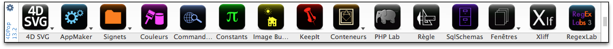
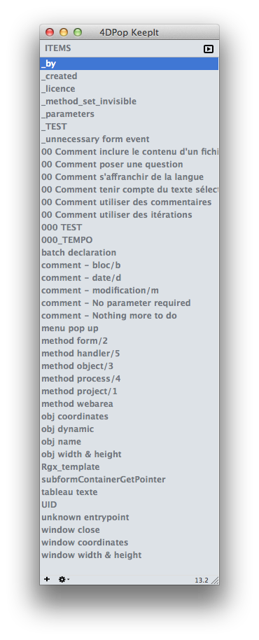
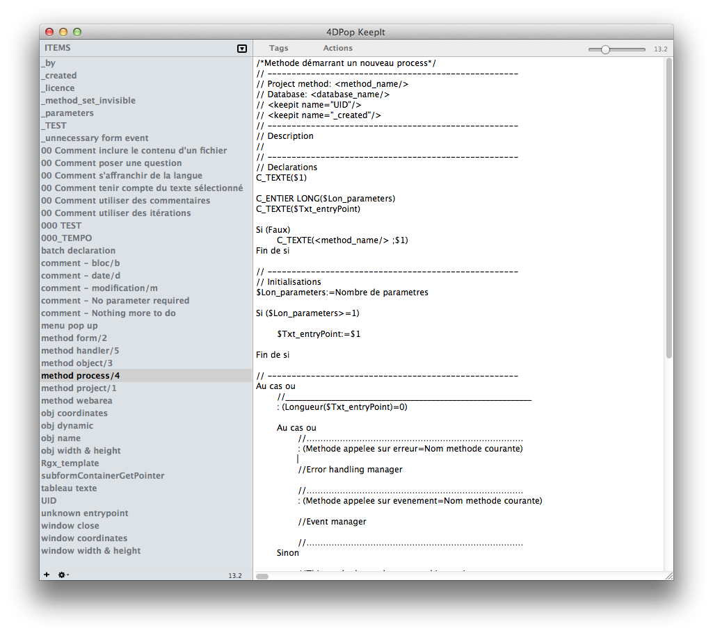
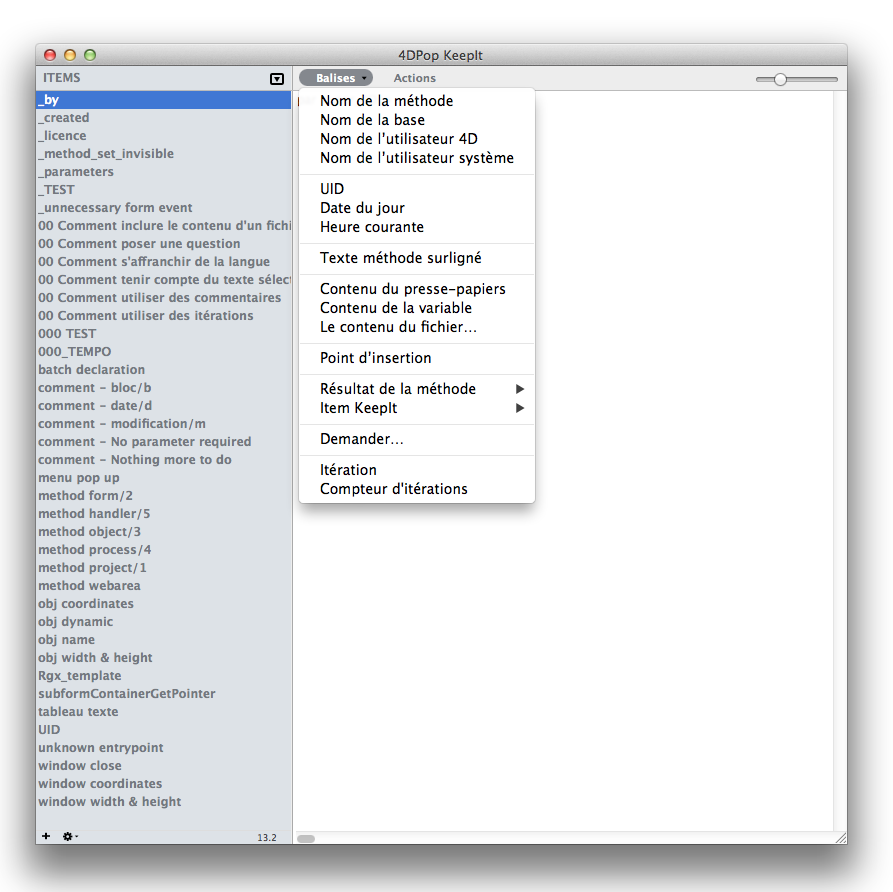

4DPop KeepIt |
|
| |
|
||||
4DPop KeepIt est un gestionnaire de fragments* ces petits bouts de code ou de texte que vous réutilisez partout. En d'autres termes, cet outil permet de mémoriser des morceaux de code et de le réutiliser lorsque vous en avez besoin par un appel clavier, un glisser-déposer ou un copier-coller.
Les éléments mémorisés sont sauvegardés d'une session à l'autre. Ils sont accessibles depuis toutes les bases à partir du moment où le composant est chargé.
Encore une chose… 4DPop KeepIt est très similaire aux macros de 4D, mais plus facile à utiliser et surtout plus puissant.
*"snippets"
| 1. | Placer le dossier "4DPop KeepIt.4dbase"* ou un alias de ce dernier dans le dossier "Components" situé à côté de l'executable 4D** afin que le composant soit chargé avec toutes les bases |
| 2. | Ouvrez votre base. |
| 3. | Si le composant 4DPop est installé un nouveau bouton "KeepIt" se trouve dans la barre d'outils. Il permet d'ouvrir l'éditeur.
 Si le composant 4DPop n'est pas installé il faut, pour afficher la fenêtre "4DPop KeepIt", créer une méthode dans la base qui appelle la commande KeepIt_tool |
*Sur Macintosh, le composant est un package dont l'extension ".4dbase" n'est pas obligatoirement visible en fonction des réglages de vos préférences d'affichage.
**Sur Macintosh, le dossier Components se trouve à l'intérieur du package 4D.app, à la racine du dossier "Contents"
Sélectionnez un fragment de code dans l'éditeur, glissez le sur la palette 4DPop et déposez le sur le bouton "KeepIt", à l'invite, donnez un nom à ce nouvel item, validez. C'est tout !
Dans l'éditeur de méthode, tappez "$$" + tabulation pour afficher la liste des fragments, sélectionnez l'item désiré et c'est tout ! Son contenu est collé dans l'éditeur.
Le texte des fragments peut contenir des balises qui seront évaluées au moment de l'utilisation de l'item. Les balises reprennent la syntaxe des balises macros de 4D.
Balises |
Description |
||||
<uid/> |
Balise remplacée par un UID généré à la volée. | ||||
<database_name> |
Balise remplacée par le nom du fichier structure. | ||||
<keepit/> |
Balise remplacée par le contenu d'un élément KeepIt Attribut :
|
||||
<ask/> |
Cette balise permet de créer une macro interactive c'est à dire une macro qui permet à l'utilisateur de personnaliser le code inséré. Le moteur pose des questions et utilise les réponses dans le texte retourné. Attribut :
| ||||
<file/> |
Cette balise permet d’inclure le contenu d’un fichier relu sur le disque. Attribut :
Note : si le fichier contient des balises, celles-ci sont interprétées au moment de l’import. |
||||
<iteration/> |
Cette balise permet de répéter une ligne de la macro. Attribut :
|
||||
<method-attribute/> |
Cet élément permet de fixer un attribut d'une méthode projet. Attribut :
Cette balise est ignorée s’il ne s’agit pas d’une méthode projet. |
||||
<method_type/> |
Retourne le type de la méthode en cours d'édition. Le résultat est celui retourné par la commande METHODE RESOUDRE CHEMIN dans le paramètre typeMéthode. Pour les méthodes objets le type est 8858 | ||||
#_IF |
Ces balises de traitement permettent d'exécuter des portions de macro de manière conditionelle.
retournera dans la méthode l'un ou l'autre des commentaires en fonction de votre réponse. |
*4DPop KeepIt ne sait pas traiter l’attribut « index » de la balise <clipboard>. Cette balise est globalement remplacée par le contenu texte du presse-papiers au moment de l’appel.
*4DPop KeepIt reconnait pour la balise <date/> les formats y, m , d pour afficher uniquement l'année, le mois ou le jour. Sont également reconnus les formats du type "y/m/d" dans n'importe quelle ordre et avec n'importe quel séparateur. Exemple "m-y" retournera "1-2013" le 1/1/2013 ou "©2009-<date format="y"/>" pour retourner "©2009-2012" en 2012.
Un clic sur le bouton "KeepIt" de la barre d'outils 4DPop ou l'exécution de la méthode "KeepIt_tool" ouvre l'éditeur de 4DPop KeepIt .
|  |
Avec la liste vous pouvez glisser-déposer un item dans l'éditeur de méthode ou bien le copier pour placer son contenu interprété dans le presse-papiers
Il existe un assistant de construction pour la plupart de ces balises. Pour insérer une balise dans la macro, utilisez le menu "Balises" et choisissez un item. Si besoin, l'assistant vous aide à construire l'élement en accord avec vos réponses. Note : L'item hiérarchique "Résultat de la méthode" liste les méthodes de votre base qui ont l'attribut "Partagé entre composants et base hôte" coché. KeepIt accepte des commentaires , éventuellement multi-ligne, délimités par la séquence /* ... */. Tout ce qui est dans les commentaires sera supprimé du texte retourné dans l'éditeur de méthode mais si des balises s'y trouvent, elles seront d'abord interprétées (poser une question, fixer un attribut). Les commentaires vous permettent de documenter vos fragments. Le premier commentaire trouvé dans le fragment est utilisé comme texte de la bulle d'aide lorsque l'élément est survolé dans la liste. À défaut de commentaire explicite, le début du texte du fragment est utilisé. D'autres balises (listées plus bas) sont utilisées par KeepIt pour assurer la tokenisation des macros qui vous permet de partager des fragments dans une équipe ne travaillant pas tous avec un 4D US ou FR. Vous pouvez tokeniser un fragment en sélectionant l'item correspondant dans le menu "Actions" Un double-clic sur un item de la liste permet de le renommer. Le panneau de droite permet d'éditer le texte attaché à un item. Le menu contextuel dans la zone de liste permet les actions courantes disponibles également sous la forme de boutons dans la barre d'outils ou de menu lorsque la fenêtre "KeepIt" est affichée au premier plan. Il est possible d'exporter un item dans un document texte via la ligne "Exporter…" du menu contextuel ou en glissant l'item sur le bureau en maintenant la touche Option sur Mac ou Alt sur PC. Dans le deuxième cas le document généré prend le nom de l'item glissé. Inversement, il est possible d'importer le contenu d'un document texte dans un nouvel item via le menu "Importer…" ou en déposant un document texte sur la liste des items. Dans le deuxième cas l'item prend automatiquement le nom du document importé. |
 |
KeepIt installe 3 macros lors de son chargement :
Nom |
Raccourci |
Saisie |
|
KeepIt |
Cmd + "€"* |
$$ |
Afficher le menu de choix de l'item à insérer. Cette méthode d'activation, équivalent à taper le texte "$$"+ tabulation, a l'avantage de conserver le mécanisme des balises <selection/> et <carret/> des macros qui sont ignorées sinon. |
KeepIt = |
Cmd + "=" |
++ |
Appel du dernier fragment sélectionné sans passer par l'affichage de la liste est la sélection. |
KeepIt + |
Cmd + "±" |
Cette macro, appelée alors que du texte est sélectionné dans l'éditeur de méthode, propose d'en faire un nouveau fragment. |
La commande partagée du composant : Keepit_get_item_by_name . permet d'insérer dans le retour de vos macros 4D le contenu de l'item KeepIt dont vous passez le nom en paramètre. Soit par exemple un item KeepIt nommé " nom_de_la_base " contenant le texte " <database_name/> ". Dans un fichier macro, vous pouvez insérer le nom de la base en cours en intégrant dans votre macro le texte : <method>Keepit_get_item_by_name("nom_de_la_base")</method>.
Ce composant est fourni en version compilée, mais vous trouverez le code source dans le dossier "Sources" à l'intérieur du dossier du composant.
Un forum pour 4DPop est disponible à cette adresse : Forum 4DPop
| <command/> | Balise remplacée par le nom localisé d'une commande 4D en fonction de la langue du 4D utilisée
Attribut : |
| <constant/> | Balise remplacée par le nom localisé d'une constante 4D en fonction de la langue du 4D utilisée
Attribut : |
| <if/> <else/> <end_if/> <case_of/> <end_case/> <while/> <end_while/> <for/> <end_for/> <repeat/> <until/> |
Balises qui seront remplacée par la version localisée des structures de boucle et condition du langage 4D en fonction de la langue du 4D utilisée.
Exemple le code suivant: Sera collé dans l'éditeur de méthode d'un 4D FR ainsi : et dans l'éditeur de méthode d'un 4D US : |